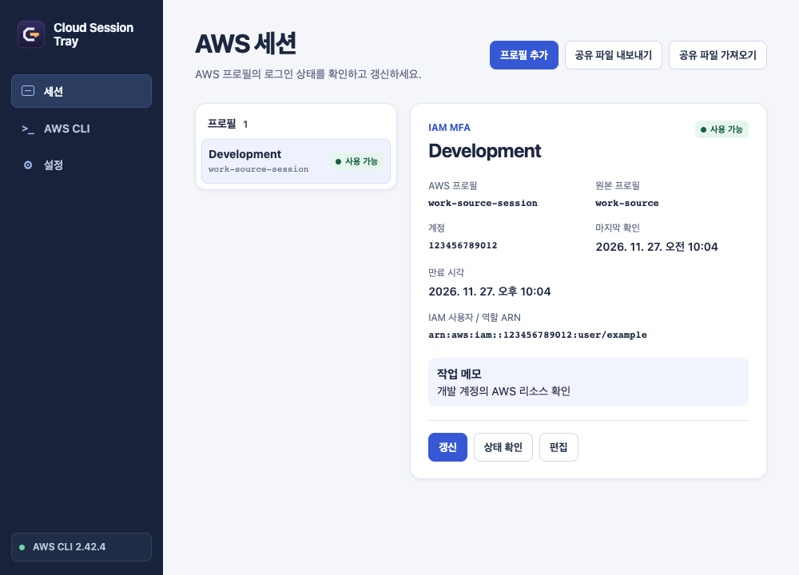
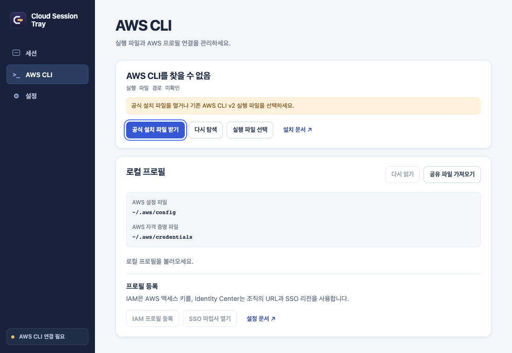
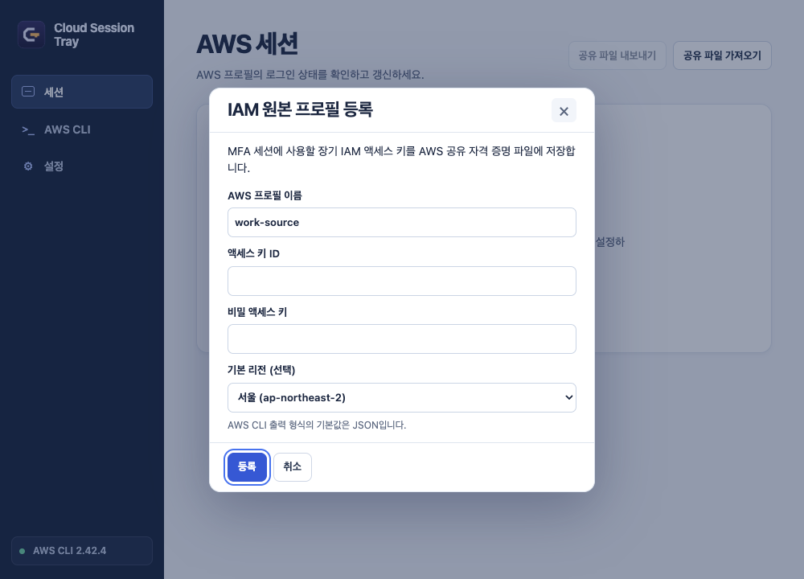
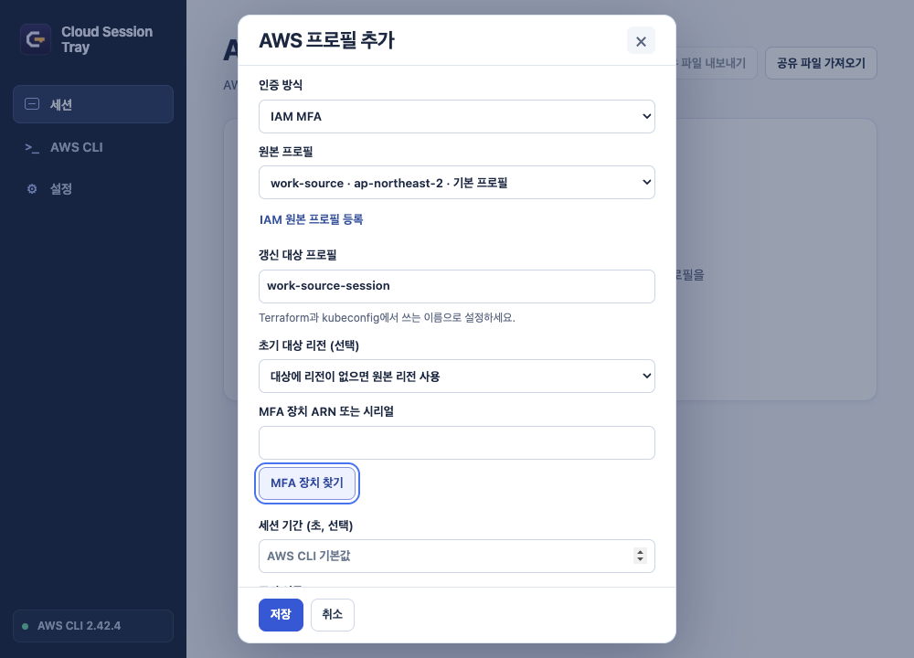
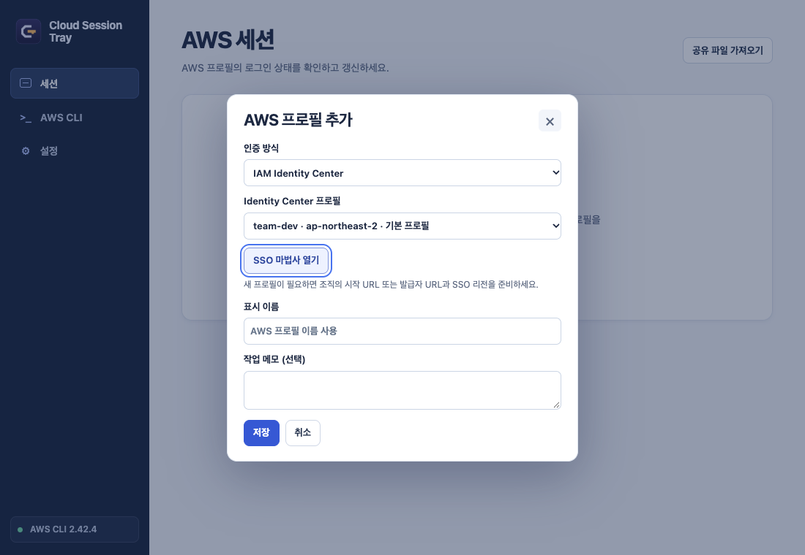
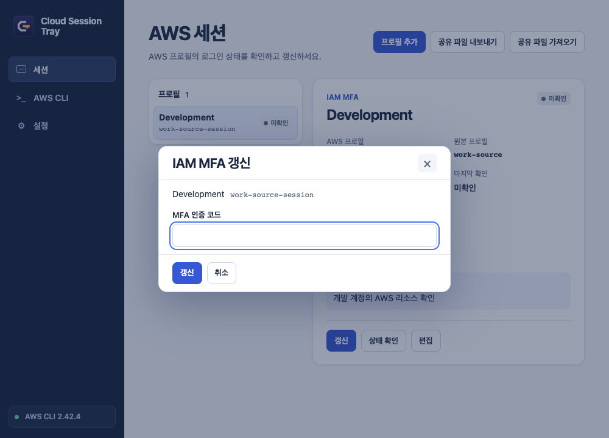
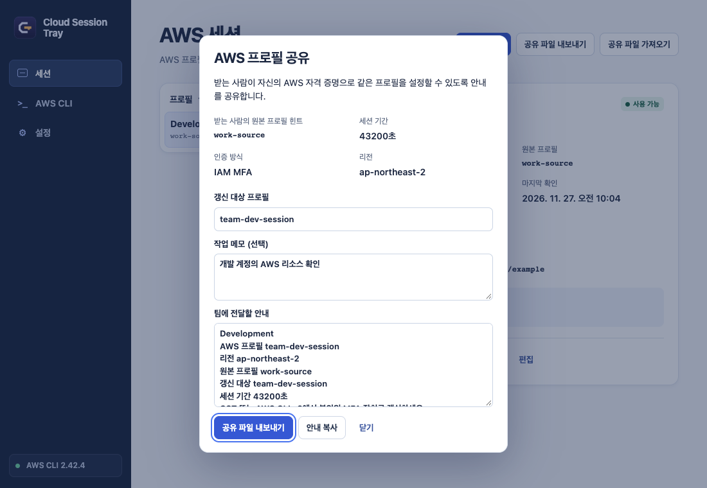
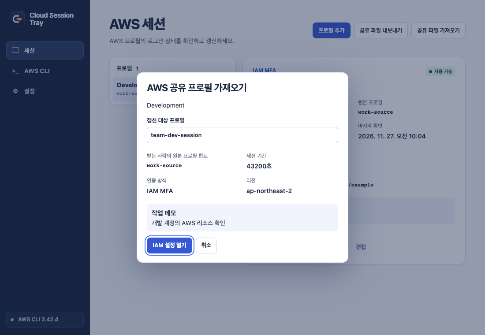

macOS · Apple Silicon
DMG를 열고 Cloud Session Tray를 응용 프로그램 폴더로 끌어다 놓은 뒤 실행하세요. 빌드는 애드혹 서명을 사용합니다. macOS가 실행을 차단하면 Apple의 앱 열기 안내를 따라 주세요.

DMG를 열고 Cloud Session Tray를 응용 프로그램 폴더로 끌어다 놓은 뒤 실행하세요. 빌드는 애드혹 서명을 사용합니다. macOS가 실행을 차단하면 Apple의 앱 열기 안내를 따라 주세요.
EXE를 실행해 설치한 뒤 시작 메뉴에서 Cloud Session Tray를 엽니다. 설치 파일에 코드 서명이 없어 Windows에서 게시자 경고가 표시될 수 있습니다.
AWS CLI를 연결한 다음, 계정에 맞는 인증 방식으로 세션을 추가하세요.

장치를 검색하려면 iam:ListMFADevices 권한이 필요합니다.



IAM MFA 세션이 만료되기 전에 알림을 받으려면 설정에서 만료 알림을 켜고 상단의 설정 저장을 누르세요.

공유 파일에는 프로필 설정과 작업 메모가 담깁니다. AWS 액세스 키, 세션 토큰, MFA 코드는 기기에 남습니다.

